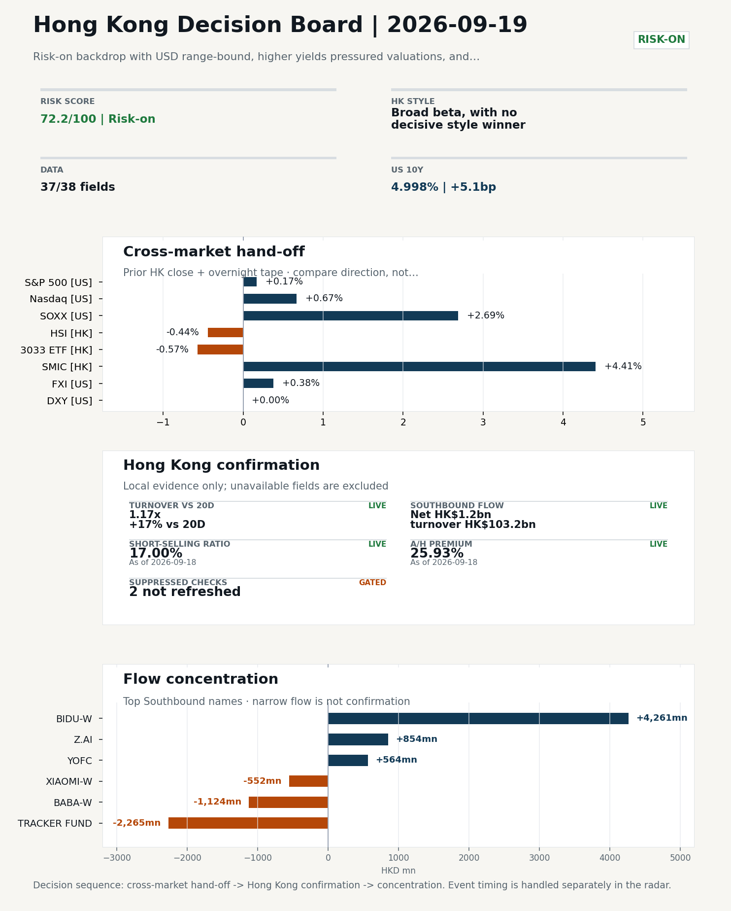
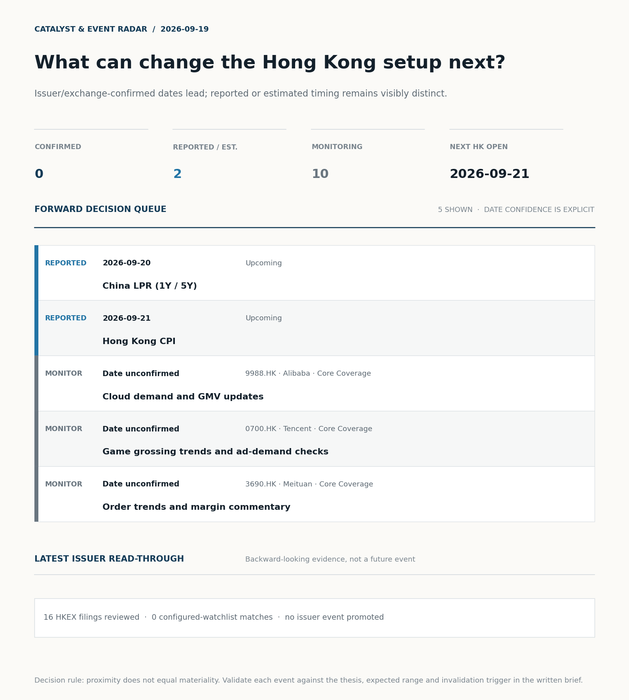
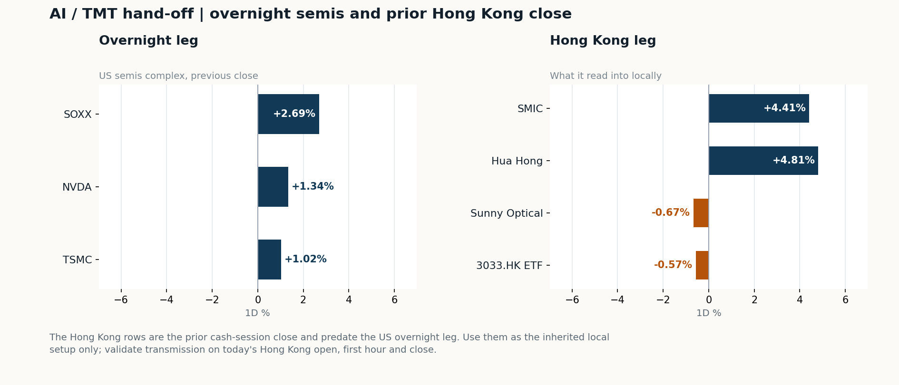
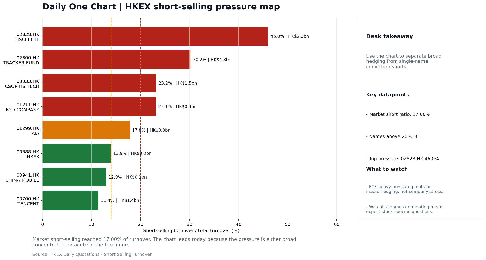

In this issue
Morning Research Workbench | 2026-09-19
Executive Summary
- Did yesterday's call work? UNRESOLVED - No comparable next close is available yet, so the call is still open.
- What changed overnight? Semis led higher: SOXX +2.69%, NVDA +1.34%, TSMC +1.02%. HSI -0.44% and 3033.HK -0.57%.
- What it means for AI/TMT No decisive style winner - Broad beta, with no decisive style winner, a 0.19pp spread. Avoid forcing a growth-versus-value call; let volume, Southbound concentration, and the first-hour relative tape identify leadership.
- What to watch today Next scheduled catalyst: China LPR (1Y / 5Y) on 2026-09-20. Confirm if SMIC and Hua Hong open in the same direction as the overnight leg and hold it through the first hour; invalidate if they track HSCEI instead.
Layer 1 | Scan (5 min)
1.1 Yesterday's Call
Verdict: UNRESOLVED. No comparable next close is available yet, so the call is still open.
Recent record. 6 confirmed / 4 broken over the last 10 scoreable calls (60.0% hit rate). This is a directional close-to-close diagnostic, not a track record.
1.2 Opening Decision Board
Global-to-Hong Kong signals
Decision-useful subset: each row states the implication and the next test. Descriptive secondary monitors are kept out of the five-minute scan.
| Signal | Last / move | Interpretation | Confirmation / invalidation |
|---|---|---|---|
| S&P 500 | 7,650.50 / +0.17% | Broad US risk rose as volatility drained out of the tape, which sets the external floor Hong Kong opens against. Falling volatility confirms lower near-term stress. | Watch whether Nasdaq and offshore-China proxies move the same way. |
| Nasdaq 100 | 29,644.17 / +0.67% | Growth outperformed broad beta, a supportive style signal for Hong Kong internet and platform names. Growth advanced despite higher yields, showing momentum resilience but also higher reversal sensitivity. | 3033.HK versus HSI leadership carries the read; rising yields would undo it. |
| Hang Seng Index | 24,604.29 / -0.44% | Broad beta fell helped by a firmer offshore renminbi, with growth and value moving together. | Southbound participation decides whether this is investable or just a print. |
| Hang Seng TECH ETF (3033.HK) | 4.2180 / -0.57% | Hong Kong growth lagged, so broad-index strength is not yet a duration signal. | Needs a stable CNH and Southbound buying to become a duration signal. |
| Semiconductors (SOXX) | 533.07 / +2.69% | Semis led the Nasdaq by 2.02pp, putting the AI capex trade back in front. | SMIC and Hua Hong at the open show whether it transmits to Hong Kong. |
| US 10Y | 4.9980% / +5.1bp | The yield proxy rose, tightening the discount-rate backdrop for long-duration Hong Kong growth. | Read it through 3033.HK relative performance, not the index level. |
| USD/CNH | 6.6520 / -0.83% | A stronger offshore renminbi supports the external-risk backdrop for Hong Kong equities. | FXI and Southbound flow decide whether this reaches Hong Kong equities. |
| VIX | 14.81 / -4.08% | Lower implied volatility reduces near-term stress, but is supportive only if equity breadth confirms. | Falling volatility on narrowing breadth is a warning, not support. |
Secondary monitors retained in the source bundle: SMIC (0981.HK), CSI 300, China 10Y, CN-US 10Y spread, DXY, USD/HKD, Brent crude, COMEX gold, Copper.
Hong Kong local confirmation
Coverage gate: 1 unavailable local checks are suppressed here and retained in validation metadata.
| Check | Value | Status | Source / as of | Why it matters |
|---|---|---|---|---|
| Main Board turnover vs 20D | 1.17x | +17% vs 20D | Live local | HKEX | 2026-09-18 | Trailing 20-session average turnover was HK$228.2bn. |
| Southbound / Northbound net flow | Southbound Net HK$1.2bn | turnover HK$103.2bn | Northbound Turnover RMB333.9bn | net not reported | Live local | HKEX Connect | 2026-09-18 | Southbound net buy is calculated from HKEX disclosed buy and sell turnover. |
| Short-selling ratio | 17.00% | Live local | HKEX | 2026-09-18 | Official HKEX stock-level short-selling table, aggregated as a share of total market turnover. |
| AH premium index | 25.93% | Live public | Yahoo | 2026-09-18 | Fixed 10-name basket, equal-weighted, both legs priced on the same date; comparable across dates. Covered-pair average was +44.50% across 19 pairs. |
| USD/HKD spot vs band | 7.8441 | Live quote | Yahoo | 2026-09-18 | 59 pips from the weak-side CU (7.8500); monitor HKMA operations and the aggregate balance for a funding squeeze. |
| Hong Kong leadership | Broad beta, with no decisive style winner | Proxy | HSI / HSCEI / 3033.HK ETF relative | 2026-09-18 | Use HSI / HSCEI / 3033.HK ETF relative moves as the opening style read. |
Risk state and evidence
Composite risk score: 72.2/100 | Regime: Risk-on
| Component | Score impact | Evidence |
|---|---|---|
| US beta | +1.0 | S&P 500 +0.17% |
| HK growth ETF proxy | -2.8 | 3033.HK ETF -0.57% |
| Semis complex | +9 | SOXX +2.69% |
| Offshore China proxy | +1.9 | FXI +0.38% |
| Dollar pressure | +0.0 | DXY -0.00% |
| Volatility | +8.2 | VIX -4.08% |
| HK short-selling | +0 | Short-selling ratio 17.00% |
| HK turnover | +5 | Turnover 1.17x 20D |
Base 50 plus the component deltas above. Semis complex entered the score on 2026-08-22; earlier scores in the ledger exclude it.
Morning Checklist
- Risk-on backdrop with USD range-bound, higher yields pressured valuations, and Nasdaq 100 outperformed FXI Overnight regime | Start by deciding whether the day is about Risk-on conditions or a style pivot.
- China Activity Data (IP / Retail Sales / FAI) (Past expected window (unverified)) Macro / policy | Consumer resilience, growth expectations, and risk-asset pricing | Industries: Consumer, E-commerce, Consumer discretionary
- China LPR (1Y / 5Y) (Upcoming) Macro / policy | Watch whether it changes the day's core market narrative | Industries: Market-wide
- Hong Kong CPI (Upcoming) Macro / policy | Local funding conditions, retail purchasing power, and HKD real rates | Industries: Property, Retail, Banks
Visual Dashboard

Catalyst & Event Radar

Chart read: No issuer/exchange-confirmed event date is populated; 2 reported or estimated timing item(s) and 10 undated trigger(s) remain explicit.
Source: Public calendars, issuer disclosures and configured research watchlists
Layer 2 | Core Research (20-30 min)
2.1 Global-to-Hong Kong Transmission
Market Setup Core tape. Overnight US equities closed mixed-to-firmer, with growth and the AI complex leading and broader beta more muted. Main driver. The 2026-09-18 US tape shows Nasdaq 100 +0.67% and S&P 500 +0.17%, with FXI +0.38% reversing the prior HSI direction of -0.44%. HK relevance. Higher US yields were a valuation drag on duration-sensitive names even as softer oil and lower VIX supported the risk-on read.
Key Drivers
- Oil moved -5.69% intraday (WTI -6.32%), easing the energy/inflation drag and supporting growth multiples.
- US 10Y yield +5.1bp acted as a drag on valuation-sensitive sectors, partially offsetting the equity bid.
- Semis complex strength (SOXX +2.69%, NVDA +1.34%, TSM +1.02%) transmitted directly to the HK-listed semis space, where SMIC +4.41% and Hua Hong +4.81% on 2026-09-18 already priced that signal.
- DXY -0.00% and USD/CNH -0.83% framed CNH stability, making HK follow-through more credible, while VIX -4.08% signalled easing stress.
Hong Kong Read-Through Opening implication. For the 2026-09-21 HK open, the constructive US semis tape and softer oil/VIX argue for a firmer tech-led bias, with HK-listed semis (SMIC, Hua Hong) and platform names most directly exposed to overnight signals. Confirmation requires the first-hour tape to show broad HSI participation rather than a sharp 3033.HK-versus-HSCEI split; sustained US yield rises or hawkish Warsh headlines remain the main downside risk to that open. Hong Kong style leadership and flow confirmation are set out in the Hong Kong review below.
Watch Points
- USD composite moved lower by -0.02pct intraday, with a 0.389pct range.
- Main turning points appeared around 2026-09-18 08:05 trough / 2026-09-18 08:30 peak / 2026-09-18 08:55 trough, suggesting event-driven repricing rather than a clean one-way USD move.
- The biggest cross-asset divergence was Nasdaq 100 versus FXI, a spread of 0.176pct.
- Gold moved +0.37pct intraday with a 1.275pct high-low range.
Curated overnight stories
- Three words from Kevin Warsh have Wall Street wondering how far the Fed will go with Why it matters: Signals a more hawkish Fed reaction function under Chair Warsh, with implications for the USD, US yields and global risk-asset multiples. HK read-through: Higher US yields tend to pressure HK growth/tech valuations and support the HKD funding backdrop; HK banks and insurance are second-order beneficiaries of steeper curves.
- China's August retail sales miss forecast while investment slump deepens, piling Why it matters: Confirms a soft consumer and weak FAI picture into 3Q, raising the probability of additional policy support (fiscal or LPR/RRR) - China LPR is on the upcoming calendar. HK read-through: Direct read-through to HK consumer discretionary, e-commerce, and Macau/gaming names.
- US and China Vie For AI Lead Before Trump - Xi Summit Why it matters: Frames AI/export-control rhetoric as a core agenda item at the upcoming Trump - Xi meeting, with potential implications for chip and AI compute access. HK read-through: Directly relevant to HK-listed China Internet (Alibaba, Tencent, etc.) and the Hong Kong-listed AI/semis complex.
- OpenAI and Anthropic are making 10 times more revenue than all Chinese AI models Why it matters: Quantifies the US-vs-China AI commercial gap and reinforces the 'catching up' narrative for Chinese model developers. HK read-through: Sets the bar for monetisation expectations on China Internet AI names; adds volatility risk around AI-related headlines into the Trump - Xi summit.
- China's AI leaders keep quiet despite U.S. 'publicity' on tech risks Why it matters: Suggests Chinese AI labs are avoiding public sparring ahead of the summit, reducing headline risk but also signalling a defensive posture on US AI risk narratives. HK read-through: Lowers near-term headline volatility for China Internet AI names but caps positive catalysts.
AI / TMT hand-off

Overnight leg. The overnight semis leg was risk-on at +1.68% average (SOXX +2.69%, NVDA +1.34%, TSMC +1.02%). Hong Kong expression. SMIC, Hua Hong and Sunny Optical are best placed at the open, and 3033.HK should be tested before the Hang Seng Index. Observable test. Confirm if SMIC and Hua Hong open in the same direction as the overnight leg and hold it through the first hour; invalidate if they track HSCEI instead, which would mean local flow is overriding the global cycle.
| Name | Role in the chain | 1D | Leg |
|---|---|---|---|
| SOXX | Semis complex | +2.69% | overnight |
| NVDA | AI capex narrative | +1.34% | overnight |
| TSMC | Foundry demand | +1.02% | overnight |
| SMIC | Leading-edge / domestic substitution | +4.41% | Hong Kong |
| Hua Hong | Mature-node pricing cycle | +4.81% | Hong Kong |
| Sunny Optical | Hardware and optics supply chain | -0.67% | Hong Kong |
| 3033.HK ETF | Broad HK tech beta | -0.57% | Hong Kong |
Clock discipline. The Hong Kong rows are the prior cash-session close and predate the US overnight leg. Use them as the inherited local setup only; validate transmission on today's Hong Kong open, first hour and close.
2.2 Hong Kong Local Tape and Flow
Local Tape Setup Local read. Friday's HK tape closed mixed across styles: HSI -0.44%, HSCEI -0.38% and 3033.HK -0.57% (same session as the US semis surge). Verification point. Main Board turnover at 1.17x the 20D average (HK$228.2bn) and 17.00% short-selling ratio make local price action credible rather than thin. Risk to watch. CNH was stable into the close (USD/CNH -0.83%), which would normally support HK follow-through; the missing piece is confirmation from CSI 300/HK growth proxies on Monday given the higher US 10Y (+5.1bp) headwind.
Style and Local Leadership Style call. Broad beta, with no decisive style winner.
- Evidence: 3033.HK and HSCEI were separated by only 0.19pp (-0.57% versus -0.38%)
- Portfolio meaning: Avoid forcing a growth-versus-value call; let volume, Southbound concentration, and the first-hour relative tape identify leadership.
- Cross-market read: Hang Seng -0.44% / HSCEI -0.38% / 3033.HK ETF -0.57%. Offshore China proxy FXI +0.38% and USD/CNH -0.83% frame cross-border risk appetite. USD/HKD last traded around 7.8441, which keeps the Hong Kong funding lens in focus.
Flow Confirmation Official Stock Connect evidence is available; the Flow Tracker confirms whether local money supports the price action.
Follow-Through Checklist Follow-through check. Watch the first-hour tape for: (a) 3033.HK holding its 0.87x volume ratio while HSCEI narrows its loss - confirms breadth beyond semis. Failure condition. Reclassify the tape when either 3033.HK or HSCEI opens a sustained 0.5pp relative lead with flow confirmation.
Cross-asset attribution
| Driver | Direction | Score | Evidence | HK implication |
|---|---|---|---|---|
| Oil and geopolitics | supportive | 4.62 | Oil moved -5.77%. | Split the read between energy/cyclicals support and margin/geopolitical pressure. |
| Hong Kong participation | supportive | 1.68 | Main Board turnover was 1.17x the 20-session average. | Higher participation makes local price action more credible. |
| Dollar / CNH pressure | supportive | 1.24 | DXY -0.00% / USD-CNH -0.83% | A stable or softer CNH makes Hong Kong follow-through more credible. |
| Rates impulse | drag | 0.76 | US 10Y yield moved +5.1bp. | Lower yields help long-duration growth; higher yields pressure valuation-sensitive |
Local flow evidence
Flow Takeaways
- Hong Kong participation is active and short pressure is not excessive, so local confirmation looks healthier.
- Stock Connect Southbound: net HK$1.2bn on turnover HK$103.2bn (as of 2026-09-18).
- Stock Connect Northbound: turnover RMB333.9bn; public file provides total turnover/top active names, not full net-buy.
- AH premium: fixed 10-name basket +25.93% (comparable across dates); covered-pair average +44.50% over 19 pairs; widest premium: China Railway 239.21%.
Stock Connect Southbound Active Names
| # | Ticker | Name | Buy | Sell | Net buy | HKEX turnover rank |
|---|---|---|---|---|---|---|
| 1 | 09888.HK | BIDU-W | HK$4,271.6mn | HK$10.5mn | HK$4,261.2mn | 1 |
| 2 | 02800.HK | TRACKER FUND | HK$0.4mn | HK$2,265.3mn | HK$-2,264.9mn | 4 |
| 3 | 09988.HK | BABA-W | HK$1,417.2mn | HK$2,541.0mn | HK$-1,123.8mn | 3 |
| 4 | 02513.HK | Z.AI | HK$3,168.0mn | HK$2,314.4mn | HK$853.6mn | 1 |
| 5 | 06869.HK | YOFC | HK$1,810.1mn | HK$1,245.7mn | HK$564.4mn | 6 |
AH Premium Dispersion
| Name | A ticker | H ticker | Premium | As of |
|---|---|---|---|---|
| China Railway | 601390.SS | 0390.HK | +239.21% | 2026-09-18 |
| China Communications Construction | 601800.SS | 1800.HK | +106.57% | 2026-09-18 |
| China Railway Construction | 601186.SS | 1186.HK | +59.37% | 2026-09-18 |
HKEX Short-Selling Watch
| Ticker | Name | Short ratio | Short turnover | Total turnover |
|---|---|---|---|---|
| 00388.HK | HKEX | 13.93% | HK$0.2bn | HK$1.6bn |
| 00700.HK | TENCENT | 11.40% | HK$1.4bn | HK$12.2bn |
| 00941.HK | CHINA MOBILE | 12.94% | HK$0.1bn | HK$0.6bn |
- Short-value leaders: 02800.HK TRACKER FUND (HK$4.3bn); 02828.HK HSCEI ETF (HK$2.3bn); 09888.HK BIDU-W (HK$1.7bn); 03033.HK CSOP HS TECH (HK$1.5bn).
2.3 Macro Transmission
Desk read. We are framing today's note around the China LPR setting on 2026-09-20 and Hong Kong CPI on 2026-09-21, the two releases most likely to reset the local tape before Monday's open.
Market sensitivity. Friday's completed session closed risk-on with a USD range-bound tone, but a -6.32% drop in WTI alongside a -4.08% decline in VIX and a +2.69% lift in SOXX suggests the leadership was narrow: semis and platform beta did the work.
HK implication. That combination means H-share earnings sensitivity to China's September activity data (already past the expected window) is the standing question, and the LPR is the next clean test of easing intent.
Macro watchpoints
- China 1Y and 5Y LPR on 2026-09-20: any cut, hold, or guidance shift relative to consensus and the prior activity data read.
| Time | Region | Event | Status | Desk read |
|---|---|---|---|---|
| CN | China Activity Data (IP / Retail Sales / FAI) | Past expected window (unverified) | Impact: Consumer resilience, growth expectations, and risk-asset pricing | Attention: 5/5 | Industries: Consumer, E-commerce, Consumer discretionary | |
| CN | China LPR (1Y / 5Y) | Upcoming | Impact: Watch whether it changes the day's core market narrative | Attention: 5/5 | Industries: Market-wide | |
| HK | Hong Kong CPI | Upcoming | Impact: Local funding conditions, retail purchasing power, and HKD real rates | Attention: 1/5 | Industries: Property, Retail, Banks |
Positioning and risk backdrop
- Detailed local flow evidence is covered under Flow Tracker and Attribution; keep this section focused on options, hedging, and macro-positioning risk.
2.4 Company Micro Research and Catalysts
| Grade | Sector | Headline | Why it matters | Horizon |
|---|---|---|---|---|
| B | China Internet | China's AI leaders keep quiet despite U.S. 'publicity' on tech risks | Assess whether the story can propagate through the China Internet value | Monitor |
Company Event Takeaway Desk read. Reviewing the 18 Sep session into the 21 Sep HK open. Why it matters. The only portfolio-relevant tape signal is the divergence inside China Internet. Follow-up. The CNBC AI-risk story on Z.ai/Moonshot/Alibaba/Tencent staying silent is a Monitor-grade narrative that maps first to the same China Internet complex ahead of the Trump-Xi summit.
LLM Quick Takes
- 9988.HK | Fact: +4.00% on 18 Sep, range position 51%. Read: single-session divergence vs. the rest of China Internet…
- 0700.HK | Fact: -1.64% on 18 Sep, range position 9% (bottom of band); next earnings 12 Nov 2026, no estimate comparison supplied. Read: positioning remains depressed…
- 3033.HK | Fact: -0.57% on 18 Sep, range position 5.8% (bottom quartile). Read: ETF still anchored low while 9988.HK diverged higher, so the basket is not confirming Alibaba's move. Next check…
- 1299.HK | Fact: -0.78% on 18 Sep, range position 74.5%, mid-range. Read: marginal move only. Next check: NBV/agency channel data remain the cleanest catalyst; no new information in the supplied set.
No immediate portfolio catalyst: 16 official filings were screened and the low-signal market set stays aggregated.
16 profit warnings
Broad-market filings remain traceable in the source appendix; they are not expanded here without a watchlist, estimate or liquidity read-through.
Coverage boundary. sell-side rating changes, IPO / grey-market monitor were not decision-grade in this run; their absence is not treated as confirmation that no event exists.
Core coverage requiring follow-up
Core coverage
| Name | Ticker | Last | 1D | Range position | Morning note |
|---|---|---|---|---|---|
| Alibaba | 9988.HK | 109.30 | +4.00% | Mid-range | Up 4.00% on the session, mid-range at 51% of its 60-session band. |
| Tencent | 0700.HK | 419.00 | -1.64% | Bottom of range | Marginally lower (-1.64%), still in the bottom quartile of its 60-session range (9%). |
Priority follow-up
| Name | Ticker | Last | 1D | Range position | Morning note |
|---|---|---|---|---|---|
| AIA | 1299.HK | 76.75 | -0.78% | Mid-range | Marginally lower (-0.78%), mid-range at 74% of its 60-session band. |
| BYD Company | 1211.HK | 81.50 | +0.43% | Mid-range | Marginally higher (+0.43%), mid-range at 40% of its 60-session band. |
2.5 Morning Meeting Questions
Q1. The index fell but Southbound bought - is the move real?
- Evidence: HSI -0.44% against Southbound net +1.2bn HKD.
- How to answer: Treat it as unconfirmed. Price and mainland flow disagreed, so the price move was not driven by Southbound participation; it needs another session of confirmation before being read as a trend.
Layer 3 | Session Playbook (8-12 min)
3.1 Base Case and Scenario Map
Starting posture. Broad beta, with no decisive style winner (medium confidence); composite risk 72.2/100 (Risk-on). Avoid forcing a growth-versus-value call; let volume, Southbound concentration, and the first-hour relative tape identify leadership.
Scenario map
| Scenario | Observable trigger | Interpretation | Research response |
|---|---|---|---|
| Selective growth confirms | 3033.HK keeps a >0.5pp first-hour lead over HSCEI; SMIC and Hua Hong stop lagging broad beta; CNH is stable. | The prior style split has live price confirmation, but is not yet broad China risk-on. | Prioritize internet/platform relative strength; verify participation again at the close. |
| Broad beta takes over | HSI and HSCEI rise together, breadth improves and the 3033.HK lead narrows without turning negative. | Leadership is broadening from a style trade into market beta. | Expand the research set from growth leaders to financials, SOEs and index-heavy names. |
| Risk-off continuation | 3033.HK loses its lead, semis underperform HSCEI and CNH depreciation accelerates. | The prior divergence was a temporary pocket of strength rather than a durable hand-off. | Treat rebounds as unconfirmed; focus on balance-sheet, catalyst and crowding risk. |
Clocked validation scorecard
| Window | Check | Prior evidence | Pass condition | What it decides |
|---|---|---|---|---|
| 09:30-10:30 | 3033.HK vs HSCEI | -0.19pp at the prior close | 3033.HK retains >0.5pp relative lead | Whether growth leadership survives the open |
| 09:30-10:30 | Semiconductor hand-off | SMIC +4.41%; Hua Hong Semiconductor +4.81% | Stabilise after the open; at least one stops underperforming HSCEI | Whether overnight semis pressure is contained locally |
| 09:30-10:30 | HSI price zone | 24,604 vs 24,500 / 25,000 reference grid | Hold above the lower grid or reclaim the upper grid with breadth | Whether broad beta is stabilising; grid is derived, not technical analysis |
| 09:30-10:30 | USD/CNH | 6.652 | -0.83% | No acceleration in CNH depreciation | Whether FX permits a clean Hong Kong risk extension |
| At close | Turnover | 1.17x | +17% vs 20D | At least 1.0x the 20-session average | Whether the move had normal participation |
| At close | Southbound | Net HK$1.2bn | turnover HK$103.2bn | Net buying remains positive and broadens beyond one or two names | Whether mainland money confirms the price move |
| At close | Short pressure | 17.00% | Falls versus the prior verified reading (17.00%) | Whether rebound conviction improved |
Upgrade rule. Confirm a broad-beta session only if HSI breadth and turnover improve without a sharp 3033.HK-versus-HSCEI split. Kill switch. Reclassify the tape when either 3033.HK or HSCEI opens a sustained 0.5pp relative lead with flow confirmation. Clock discipline. At 07:30, same-day Southbound, turnover and short-selling outcomes are not known. Use the first-hour price/FX checks provisionally and make the final classification only after the close. Event clock. No same-day decision-grade item is populated; the nearest reported/estimated item is China LPR (1Y / 5Y) on 2026-09-20. Verify the issuer or official calendar before relying on the date.
3.2 Conditional Theme Deep Dive
| Field | Read |
|---|---|
| Theme | AI and Compute Chain |
| Angle for the day | Track whether global AI capex, semis, cloud, and server demand are still carrying offshore China internet and hardware sentiment. |
Theme desk read Core thesis. The AI and Compute Chain theme remains the cleanest bridge between the overnight tape and Monday's HK open. Evidence. The global signals are constructive but uneven: SOXX closed +2.69%, NVDA +1.34% and TSMC ADR +1.02% provide direct support for HK semis and platform beta. What to test. Alibaba (9988.HK) closed +4.00% at the midpoint of its 60-session band.
Signals to keep in mind
- China's AI leaders keep quiet despite U.S. 'publicity' on tech risks: Assess whether the story can propagate through the China Internet
- When Building Wealth, Don't Be A Hedge Fund: BNY's Levine: Assess whether the story can propagate through the Financials value chain
- SOXX +2.69%: Semis rallied, giving HK semis and platform beta a supportive open.
- WTI crude -6.32%: Softer oil argues for a more cautious cyclical-growth read.
LLM watch items:
- China LPR (1Y/5Y) on 2026-09-20 for the cleanest read on easing intent and market-wide risk appetite.
- Alibaba (9988.HK): whether Friday's +4.00% move holds at the open and is confirmed by cloud demand or GMV commentary.
- Tencent (0700.HK) at the bottom 9% of its 60-session range as a marginal monitor for gaming and ad demand.
Related names to keep close:
| Name | Ticker | Bucket | Morning read |
|---|---|---|---|
| Alibaba | 9988.HK | Core coverage | Up 4.00% on the session, mid-range at 51% of its 60-session band. |
| Tencent | 0700.HK | Core coverage | Marginally lower (-1.64%), still in the bottom quartile of its 60-session range (9%). |
| AIA | 1299.HK | Priority follow-up | Marginally lower (-0.78%), mid-range at 74% of its 60-session band. |
Upcoming catalysts tied to the theme:
- 2026-09-21 | Hong Kong CPI | Local funding conditions, retail purchasing power, and HKD real rates
Relevant headlines:
- China's AI leaders keep quiet despite U.S. 'publicity' on tech risks
- When Building Wealth, Don't Be A Hedge Fund: BNY's Levine
- Diversify Capital & 'Let It Run': BNY's Levine
3.3 Daily One Chart
Daily One Chart | HKEX short-selling pressure map

Chart read. Market short-selling reached 17.00% of turnover. Why it matters. The chart leads today because the pressure is either broad, concentrated, or acute in the top name.
Source: HKEX Daily Quotations - Short Selling Turnover
Optional Appendix | Traceability and Performance (10-15 min)
Report Metadata
Date policy: Review date 2026-09-18 is treated as
Trading Daily. | Global (US/Europe) data date is 2026-09-18; adapter effective date is 2026-09-18 and summary date is 2026-09-18. | Hong Kong local data date is 2026-09-18; role: same-session local cash tape. Market data quality: Coverage:37/38| Missing:1Report quality:90.4/100| GradeB| Statususable with caveats
Report Quality and Validation
- Quality score: 90.4/100 | Grade: B | Status: usable with caveats
- Run summary: 8 healthy | 2 caveat | 0 failed
- Release recommendation: Send with caveats | The report is usable, but the advisory guidance should travel with it so readers understand the data gaps.
| Source | Status | Bucket |
|---|---|---|
| Macro calendar | partial | caveat |
| Risk and sentiment feed | partial | caveat |
- Grade capped: 1 prose defect(s) detected: 1 severed_list.
| Weak component | Score | Read |
|---|---|---|
| Hong Kong local metrics | 54.1 | 5 live, 3 proxy, 3 unavailable local checks. |
Quality warnings
- Hong Kong local metrics is weak: 5 live, 3 proxy, 3 unavailable local checks.
Narrative fact-check guardrail
- Checked 33 numeric claims; 0 numeric mismatch(es), 0 logic warning(s); 11 structured claims, 0 source/text warning(s); 0 critical, 0 review.
Full component weights, per-source freshness, adapter status and provenance records are archived with this report under audit/ rather than printed here.
Historical Signal Performance
- Readiness: exploratory with caveats | 69 observations | 104 active signal dates | next-close entry, 10bps cost, no same-day returns.
- Interpretation boundary: exploratory until a benchmark reaches 252 sessions and 100 active-signal sessions.
- Data-quality caveat: 23 conflicting price revision(s) and 6 non-session observation(s) remain in the research ledger.
- Daily-use boundary: cumulative return, Sharpe and the performance chart stay out of the daily commute edition until the sample and trading-calendar gates pass; use Yesterday's Call instead.
Source Links
- China's AI leaders keep quiet despite U.S. 'publicity' on tech risks (cnbc_markets)
- Meituan (MPNGF) (Q2 2026) Earnings Call Highlights: Record Revenue and Strategic AI Pivot Drive... (GuruFocus.com)
- Meituan Returns to Profit as Food-Delivery Competition Eases (The Wall Street Journal)
- China Mobile (SEHK:941): A Closer Look at Valuation After Steady Share Price Gains This Year (Simply Wall St.)
- 00070.HK Profit warning / alert announcement (HKEXnews)
- 01371.HK Profit warning / alert announcement (HKEXnews)
- 08093.HK Profit warning / alert announcement (HKEXnews)
- 08156.HK Profit warning / alert announcement (HKEXnews)
- 00513.HK Profit warning / alert announcement (HKEXnews)
- 00979.HK Profit warning / alert announcement (HKEXnews)
- 02442.HK Profit warning / alert announcement (HKEXnews)
- 01975.HK Profit warning / alert announcement (HKEXnews)